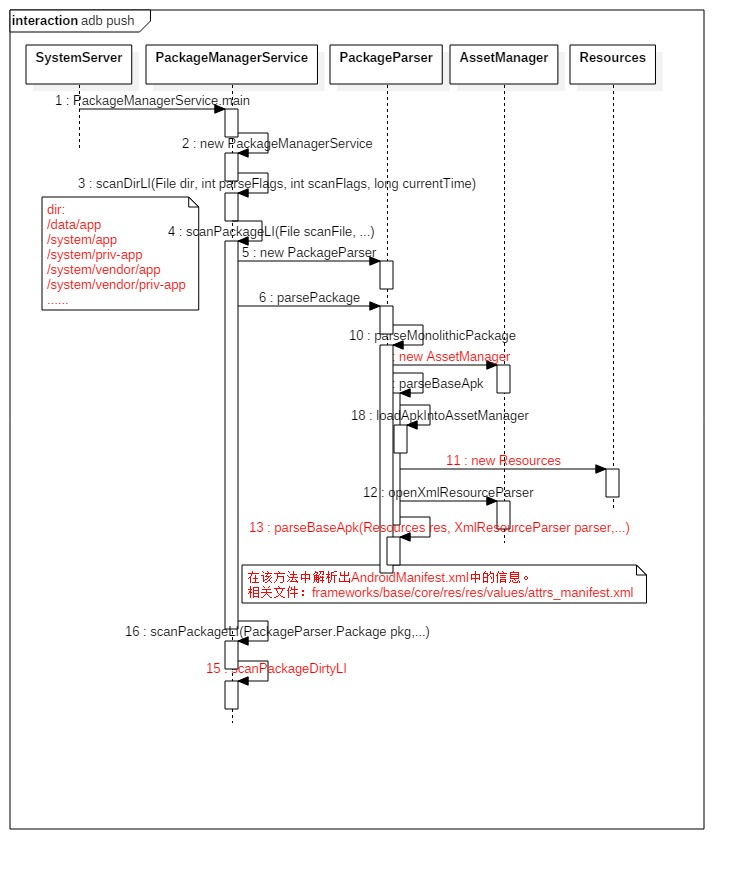
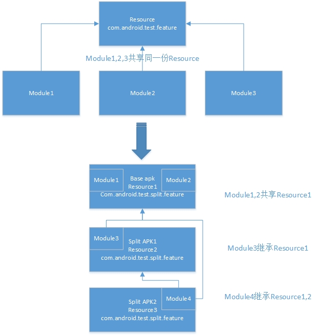
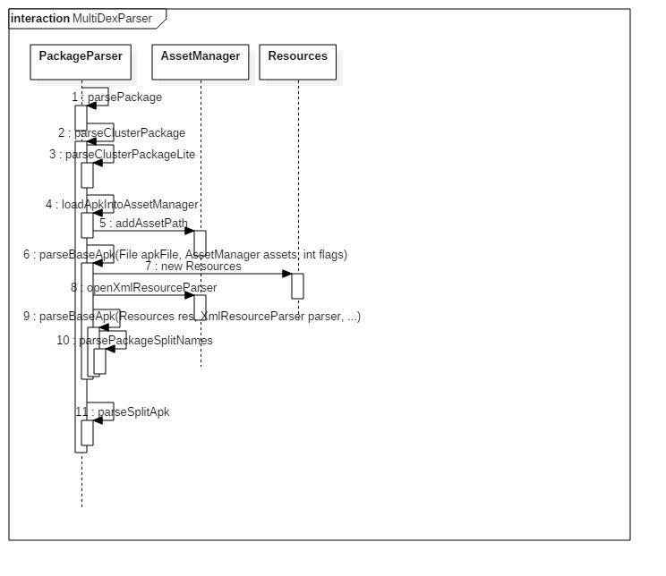

1. Android 6 PMS analysis of article 2
Android core service
Android underlying development
This article focuses on two unanalyzed methods in the previous article.
1.1. Analysis of APK files
The beginning of the scanPackageLI analysis in the previous article
private PackageParser.Package scanPackageLI(File scanFile, int parseFlags, int scanFlags,
long currentTime, UserHandle user) throws PackageManagerException {
..........................
final PackageParser.Package pkg;
try {
pkg = pp.parsePackage(scanFile, parseFlags);
} catch (PackageParserException e) {
throw PackageManagerException.from(e);
}
...........
We did not analyze the PackageParser.parsePackage method and now we are going to
analyze what it does.
public Package parsePackage(File packageFile, int flags) throws PackageParserException {
if (packageFile.isDirectory()) {
return parseClusterPackage(packageFile, flags);
} else {
return parseMonolithicPackage(packageFile, flags);
}
}
In the parsePackage method, you need to judge the incoming File.
After Android 5.0, it supports the default of one app to associate multiple
APKs. When an app is like this, these APKs will be placed in a folder, then
parseClusterPackage will be called.
When the incoming file is an apk file, call parseMonolithicPackage to handle it.
1.2. Parse a single apk
First analyze the case of file as an apk file, namely parseMonolithicPackage:
public Package parseMonolithicPackage(File apkFile, int flags) throws PackageParserException {
if (mOnlyCoreApps) {//When the PMS is initialized, the variable is generally false, and is true only in special cases such as encryption and decryption of the data area.
final PackageLite lite = parseMonolithicPackageLite(apkFile, flags);
if (!lite.coreApp) {
throw new PackageParserException(INSTALL_PARSE_FAILED_MANIFEST_MALFORMED,
"Not a coreApp: " + apkFile);
}
}
final AssetManager assets = new AssetManager();//AssetManager is the resource management framework
try {
final Package pkg = parseBaseApk(apkFile, assets, flags);// When parseBaseApk, will transfer the assets
pkg.codePath = apkFile.getAbsolutePath();
return pkg;
} finally {
IoUtils.closeQuietly(assets);
}
}
First create a resource management framework object AssetManager, and pass it to
the parseBaseApk method together with apkfile:
private Package parseBaseApk(File apkFile, AssetManager assets, int flags)
throws PackageParserException {
final String apkPath = apkFile.getAbsolutePath();// Return apkFile absolute path name string
String volumeUuid = null;
if (apkPath.startsWith(MNT_EXPAND)) {
final int end = apkPath.indexOf('/', MNT_EXPAND.length());
volumeUuid = apkPath.substring(MNT_EXPAND.length(), end);
}
mParseError = PackageManager.INSTALL_SUCCEEDED;
mArchiveSourcePath = apkFile.getAbsolutePath();
if (DEBUG_JAR) Slog.d(TAG, "Scanning base APK: " + apkPath);
final int cookie = loadApkIntoAssetManager(assets, apkPath, flags);
Resources res = null;
XmlResourceParser parser = null;
try {
res = new Resources(assets, mMetrics, null);
/*
The member function updateConfiguration is called in the Resources class constructor.
The first is to update the current configuration information of the device according to the parameters config and metrics.
For example, screen size and password, country and language, keyboard configuration, etc.
Then call the member function setConfiguration of the JavaManager's AssetManager object pointed to by the member variable mAssets to set the configuration information to the associated AssetManager object of the C++ layer.
*/
assets.setConfiguration(0, 0, null, 0, 0, 0, 0, 0, 0, 0, 0, 0, 0, 0, 0, 0,
Build.VERSION.RESOURCES_SDK_INT);
//Create an xml parser for AndroidMainfest.xml
parser = assets.openXmlResourceParser(cookie, ANDROID_MANIFEST_FILENAME);
final String[] outError = new String[1];
// Start to really parse AndroidMainfest.xml
final Package pkg = parseBaseApk(res, parser, flags, outError);
if (pkg == null) {
throw new PackageParserException(mParseError,
apkPath + " (at " + parser.getPositionDescription() + "): " + outError[0]);
}
pkg.volumeUuid = volumeUuid;
pkg.baseCodePath = apkPath;
pkg.mSignatures = null;
return pkg;
} catch (PackageParserException e) {
throw e;
} catch (Exception e) {
throw new PackageParserException(INSTALL_PARSE_FAILED_UNEXPECTED_EXCEPTION,
"Failed to read manifest from " + apkPath, e);
} finally {
IoUtils.closeQuietly(parser);
}
}
The method is blunt, which is to parse the AndroidMainfest.xml file. The real
parsing of this xml is the parseBaseApk method that is called internally. This
method first calls a constructor with pkgName as its argument to create a
PackageParser.Package object.
public Package(String packageName) {
this.packageName = packageName;
applicationInfo.packageName = packageName;
applicationInfo.uid = -1;
}
The next step is to assign the parsed AndroidMainfest.xml information to the
related attribute fields of the Package. Such as the four major components
declared in the xml, the version number of the app and so on.
public final static class Package {
public String packageName;
.........................
public String codePath;
/** Path of base APK */
public String baseCodePath;
/** Paths of any split APKs, ordered by parsed splitName */
public String[] splitCodePaths;
................................
// For now we only support one application per package.
public final ApplicationInfo applicationInfo = new ApplicationInfo();
public final ArrayList<Permission> permissions = new ArrayList<Permission>(0);
public final ArrayList<PermissionGroup> permissionGroups = new ArrayList<PermissionGroup>(0);
public final ArrayList<Activity> activities = new ArrayList<Activity>(0);
public final ArrayList<Activity> receivers = new ArrayList<Activity>(0);
public final ArrayList<Provider> providers = new ArrayList<Provider>(0);
public final ArrayList<Service> services = new ArrayList<Service>(0);
public final ArrayList<Instrumentation> instrumentation = new ArrayList<Instrumentation>(0);
.....................................
// The version code declared for this package.
public int mVersionCode;
// The version name declared for this package.
public String mVersionName;
// The shared user id that this package wants to use.
public String mSharedUserId;
.................................
In fact, the process of parsing apk is the process of parsing xml and then
populating the PackageParser.Package object.
Timing diagram:

1.3. Parsing an app with multiple apks
Split APK is Google's mechanism for solving the 65536 cap, and the APK
installation package is getting bigger and bigger, introduced in Android L.
Split APK can split a huge APK into multiple independent APKs according to
screen density, ABI, etc. When the application is updated, you don't have to
download the whole APK, just download a module to install the update.
Split APK separates the original APK from multiple modules sharing the same
resource into multiple APKs using their own resources, and can inherit the
resources in the Base APK. Multiple APKs have the same data, cache directory,
multiple dex files. , the same process, only one APK is displayed in
Settings.apk, and the same package name is used.

See the article to
learn how to use this mechanism.
When this is the case, parseClusterPackage is called
private Package parseClusterPackage(File packageDir, int flags) throws PackageParserException {
// Get the PackageLite object of the application directory, which separately saves the names of the core and non-core applications under the directory.
final PackageLite lite = parseClusterPackageLite(packageDir, 0);
if (mOnlyCoreApps && !lite.coreApp) {
throw new PackageParserException(INSTALL_PARSE_FAILED_MANIFEST_MALFORMED,
"Not a coreApp: " + packageDir);
}
final AssetManager assets = new AssetManager();
try {
// Load the base and all splits into the AssetManager
// so that resources can be overriden when parsing the manifests.
// Load the resources of the core application first
loadApkIntoAssetManager(assets, lite.baseCodePath, flags);
// Loading resources from other non-core applications
if (!ArrayUtils.isEmpty(lite.splitCodePaths)) {
for (String path : lite.splitCodePaths) {
loadApkIntoAssetManager(assets, path, flags);
}
}
final File baseApk = new File(lite.baseCodePath);
// Parse the base application to parseBaseApk
final Package pkg = parseBaseApk(baseApk, assets, flags);
if (pkg == null) {
throw new PackageParserException(INSTALL_PARSE_FAILED_NOT_APK,
"Failed to parse base APK: " + baseApk);
}
if (!ArrayUtils.isEmpty(lite.splitNames)) {
final int num = lite.splitNames.length;
pkg.splitNames = lite.splitNames;
pkg.splitCodePaths = lite.splitCodePaths;
pkg.splitRevisionCodes = lite.splitRevisionCodes;
pkg.splitFlags = new int[num];
pkg.splitPrivateFlags = new int[num];
//Call parseSplitApk on a non-core application
for (int i = 0; i < num; i++) {
parseSplitApk(pkg, i, assets, flags);
}
}
pkg.codePath = packageDir.getAbsolutePath();
return pkg;
} finally {
IoUtils.closeQuietly(assets);
}
}
The parseClusterPackage first calls parseClusterPackageLite to perform a
preliminary analysis of the apk files in the directory, mainly to distinguish
between core applications and non-core applications. There is only one core
application, and non-core applications may or may not have multiple.
ParseBaseApk is called for the core application, parseSplitApk is called for the
non-core application, and the parsed result is stored in the same
PackageParser.Package object.
Timing diagram:

1.4. scanPackageDirtyLI method
The scanPackageLI method of the previous analysis also calls the same
scanPackageLI method with different parameters.
private PackageParser.Package scanPackageLI(PackageParser.Package pkg, int parseFlags,
int scanFlags, long currentTime, UserHandle user) throws PackageManagerException {
boolean success = false;
try {
final PackageParser.Package res = scanPackageDirtyLI(pkg, parseFlags, scanFlags,
currentTime, user);
success = true;
return res;
} finally {
if (!success && (scanFlags & SCAN_DELETE_DATA_ON_FAILURES) != 0) {
removeDataDirsLI(pkg.volumeUuid, pkg.packageName);
}
}
}
The method internally calls scanPackageDirtyLI to do the corresponding work. The
scanPackageLI method can also be called separately. We only care about the logic
when it is called by the previous scanPackageLI method.
There is such a scene in the Android system. When an intent is issued, if there
are multiple responding activities in the dialog box, Android will pop up a
dialog box for the user to select. A typical example is when you install
multiple software files that can be opened in the device. When you open the
word, if you have not set the default software, then a dialog box will pop up,
let the user choose which app to use. Open the word file. This dialog is called
ResolverActivity. So the dialog is an object that exists inside the system and
it is stored in the mResolveActivity variable of the PMS.
The code for ResolverActivity is located in framework-res.apk, so when
scanPackageLi scans that the package name of the file is "Android", it will
extract the ResolverActivity information from the file and create the
mResolveActivity object. If the system specifies an alternate ResolverActivity
by defining the string "config_customResolverActivity", then after the
alternative package name is found, the mResolveActivity object is created, not
using the ResolverActivity in framework-res.apk.
private PackageParser.Package scanPackageDirtyLI(PackageParser.Package pkg, int parseFlags,
int scanFlags, long currentTime, UserHandle user) throws PackageManagerException {
...................
if (mCustomResolverComponentName != null &&
mCustomResolverComponentName.getPackageName().equals(pkg.packageName)) {
// mResolverReplaced is set to true in this method
setUpCustomResolverActivity(pkg);
}
...................
if (pkg.packageName.equals("android")) {
synchronized (mPackages) {
if (mAndroidApplication != null) {
Slog.w(TAG, "*************************************************");
Slog.w(TAG, "Core android package being redefined. Skipping.");
Slog.w(TAG, " file=" + scanFile);
Slog.w(TAG, "*************************************************");
throw new PackageManagerException(INSTALL_FAILED_DUPLICATE_PACKAGE,
"Core android package being redefined. Skipping.");
}
// Set up information for our fall-back user intent resolution activity.
mPlatformPackage = pkg;
pkg.mVersionCode = mSdkVersion;
mAndroidApplication = pkg.applicationInfo;
if (!mResolverReplaced) {
mResolveActivity.applicationInfo = mAndroidApplication;
mResolveActivity.name = ResolverActivity.class.getName();
mResolveActivity.packageName = mAndroidApplication.packageName;
mResolveActivity.processName = "system:ui";
mResolveActivity.launchMode = ActivityInfo.LAUNCH_MULTIPLE;
mResolveActivity.documentLaunchMode = ActivityInfo.DOCUMENT_LAUNCH_NEVER;
mResolveActivity.flags = ActivityInfo.FLAG_EXCLUDE_FROM_RECENTS;
mResolveActivity.theme = R.style.Theme_Holo_Dialog_Alert;
mResolveActivity.exported = true;
mResolveActivity.enabled = true;
mResolveInfo.activityInfo = mResolveActivity;
mResolveInfo.priority = 0;
mResolveInfo.preferredOrder = 0;
mResolveInfo.match = 0;
mResolveComponentName = new ComponentName(
mAndroidApplication.packageName, mResolveActivity.name);
}
}
}
.....................
}
An app with the same name may have been scanned and installed in another
directory, so an exception is thrown.
if (mPackages.containsKey(pkg.packageName)
|| mSharedLibraries.containsKey(pkg.packageName)) {
throw new PackageManagerException(INSTALL_FAILED_DUPLICATE_PACKAGE,
"Application package " + pkg.packageName
+ " already installed. Skipping duplicate.");
}
The next code doesn't stick too much, and I have to say what the rest of the
code does.
If there is a scanning applicationLabels, and upgrade packages add the package's
Sydney West to mSeetings' mRenamedPackages variable, which is also stored in
packages.xmlUnder the label.
Verify the signature again and check if the app signature of the shared UID is
consistent. Inconsistent reports an error.
Use fixProcessName() to modify the process name of the app in the future. It can
be read by /proc/self/cmdline in the future.
If the application's sandbox directory already exists, check for errors, such as
whether the uids are consistent, etc. If an error is found, delete the data
directory and re-establish it.
To install the dynamics in the app, here are the differences between the system
app and the third-party app. The so library of the system app is usually placed
under /system/lib. In addition, there will be a connection file in the directory
of the system app pointing to the so library under /system/lib, which causes the
system app to determine the abi used by the so library by analyzing the
directory file. The third-party app can be used by armeabi, armeabi. The
directory name such as -v7a determines its abi. For third-party apps, their so
libraries will be placed
/data/app/<package name>/lib/(arm/arm64/x86)/
Then create a lib connection file in the sandbox directory, pointing to the
above directory.
If it detects that the dynamic library file that the application depends on has
changed, call performDexOpt to re-execute.
Finally, the Activity, Service, Provider, receiver, permission, Permission Group
and other information in the app are extracted and put into the PMS related
member variables.